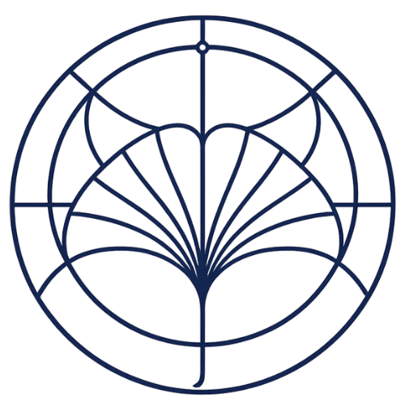

初等数学研は、高校数学や初等整数論、初等幾何学といった「誰もが一度は触れたことのある数学」を起点に、現代数学の深淵へと迫る研究・学習拠点です。
一見シンプルに見える問題の背後に隠された美しい数理構造を解き明かし、インタラクティブな数理実験広場を通して、誰もが数学のダイナミズムを視覚的・直感的に体験できる環境を構築しています。
代表者は「なとり(偽名)」で、他のメンバーを含めると現在3名が研究室のメンバーとなっています。
パスカルの三角形と三角錐を用いて、確率の広がりを視覚化します。 玉の動きを見ながら統計的な分布を学べるインタラクティブなツールです。
Under Construction
Under Construction
Under Construction